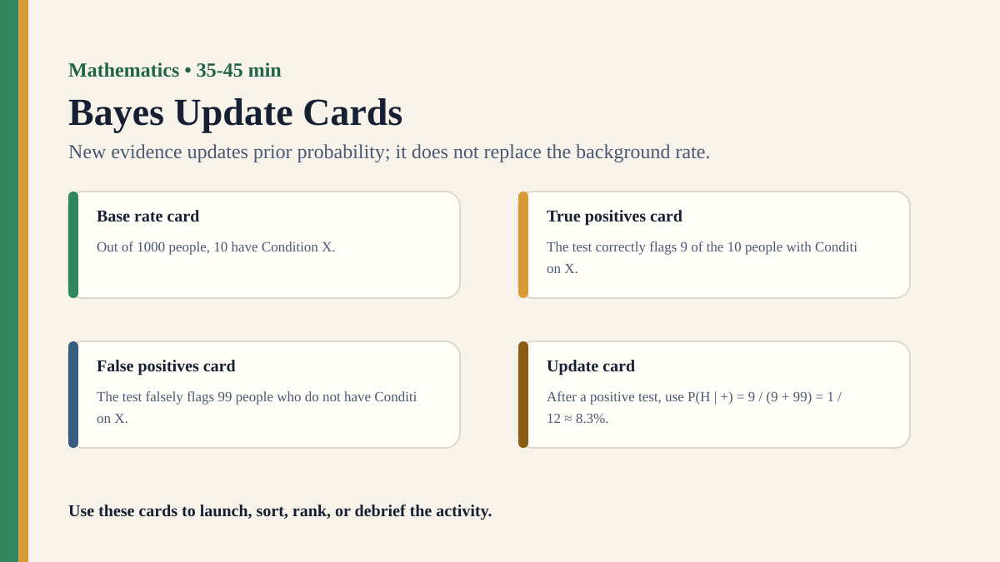

Detailed activity
Bayes Update Cards
Students use natural-frequency cards to see how prior probability and new evidence combine in Bayesian updating.
Free classroom activity
Big Idea
New evidence updates prior probability; it does not replace the background rate.
Teacher Summary
Students distinguish the probability of evidence given a hypothesis from the probability of a hypothesis given evidence.
Use frequency cards to make conditional probability visible before introducing formal notation.
Materials
- Frequency cards for a fictional screening test.
- Two-colour counters or a 1000-person grid.
- Notation card showing and .
Ready to run
Classroom Resource Pack
Use the printable pack for concrete stimulus cards, a student recording sheet, teacher prompts, and a visual prompt image.
Visual Prompt

Student Prompt
Inspect the Bayes Update Cards stimulus. Record one first claim, the evidence you used, your confidence, and what would make you revise.
Actual Lesson Questions
| # | Question for students | Teacher cue |
|---|---|---|
| 1 | Write one claim in a complete sentence. | Teacher cue: look for a clear claim, not just a description. |
| 2 | List two pieces of evidence. | Teacher cue: students should name visible words, data, source features, method features, or contextual clues. |
| 3 | Separate observation from interpretation. | Teacher cue: this is where assumptions, framing, models, or perspective usually appear. |
| 4 | Circle one confidence level and justify it. | Teacher cue: confidence is data for the debrief, not a grade. |
| 5 | Name one piece of missing information. | Teacher cue: push for method, source, context, comparison, or definitions. |
| 6 | Answer using the activity as evidence. | Teacher cue: students should move from the classroom example to a general TOK issue. |
Concrete Stimulus Packet
Stimulus
Pattern or Proof Card
Sequence A: 2, 4, 8, 16, 32. Student claim: “The next number must be 64.” Alternative rule: double until 32, then subtract 10. Both fit the visible pattern so far.
Use this to separate pattern confidence from proof or model choice.Stimulus
Bayes Update Cards Example
Fictional case: 10 of 1000 people have Condition X; a positive test catches 9 real cases and falsely flags 99 non-cases.
Use this as the activity-specific version of the stimulus.Stimulus
Comparison / Twist Card
Notation contrast card: is not the same as .
Reveal after students commit to their first judgement.Teacher Key / Reveal
The key move is not the “right answer”; it is the moment students see how new evidence updates prior probability; it does not replace the background rate.
Setup Notes
- Prepare counters in two colours: true positives and false positives.
- Hide notation at first; reveal only after students build the frequency table.
Ready-to-Use Examples
- Fictional case: 10 of 1000 people have Condition X; a positive test catches 9 real cases and falsely flags 99 non-cases.
- Notation contrast card: is not the same as .
Run Resources
- Natural-frequency grid with true positives, false positives, false negatives, and true negatives.
- Risk communication comparison card: words, percentage, frequency, visual grid, and notation.
Procedure
- Give students a fictional condition, base rate, and test accuracy in words.
- Ask for an intuitive estimate after a positive result.
- Build the case using natural frequencies, separating true positives from false positives.
- Introduce the update calculation .
- Compare how the same information feels in words, percentages, frequencies, and notation.
Teacher Language
- The notation is not decoration; it tells us which direction the probability is asking about.
- Point to the numerator and denominator before you calculate.
TOK Debrief Questions
- Knowledge question: How does mathematical notation change what is visible in a knowledge claim?
- Why do many knowers confuse with ?
- What responsibilities come with communicating risk to non-specialists?
Knowledge Questions
- How does notation shape mathematical knowledge?
- When is a mathematically correct risk claim still misleading?
- What makes a representation responsible?
Sample Student Output
- I confused test accuracy with the chance the person really had the condition.
- The frequency grid made the denominator visible.
Exhibition Object Idea
A frequency grid annotated with and false positives.
Adaptations
- Support: use 100 people and round numbers.
- Challenge: change the base rate and ask students to predict the direction of the update before calculating.
Extension Tasks
- Students write a public-health risk statement in three formats and critique each one.
- Compare Bayesian updating with search rankings, eyewitness evidence, or historical source reliability.
Teacher Notes
Keep the scenario fictional and low-stakes to avoid health anxiety.
Use natural frequencies first; introduce notation only after students can point to the relevant groups.